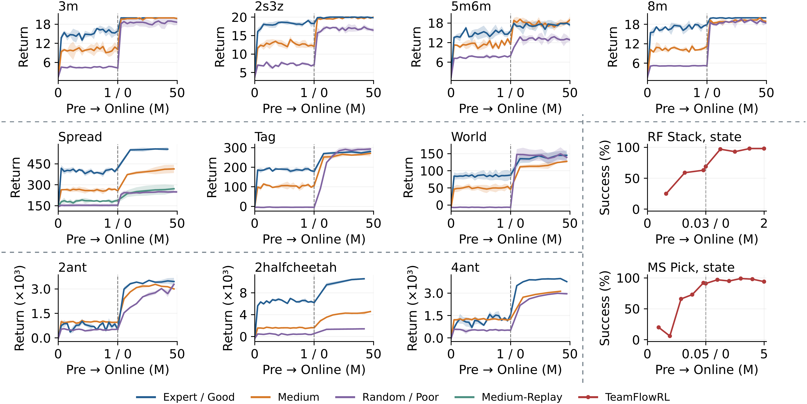
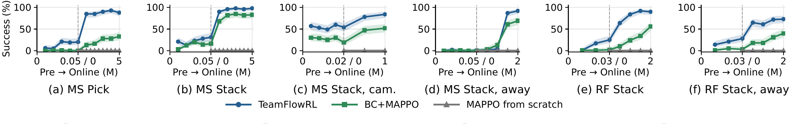

TeamFlowRL: Online Policy Optimization of Decentralized Flow Policies for Multi-Agent Coordination
Abstract摘要
Complex cooperative tasks require coordinated multi-agent behavior. Offline generative policies learn expressive cooperative behaviors from trajectories but remain limited by fixed datasets. Online reinforcement learning can improve them through environment interaction. However, fine-tuning flow policies is difficult because action likelihoods are hard to compute. We propose TeamFlowRL, a two-stage framework that pretrains multi-agent flow policies offline and fine-tunes them online. We formulate team policy optimization over the complete denoising trajectories of decentralized flow policies, avoiding intractable action likelihoods. The resulting objective weights each agent's trajectory ratio with a shared team advantage and clips each ratio separately, aligning local policy updates with the common team return. Across 51 paired configurations in seven simulation groups, TeamFlowRL improves every offline initialization, with a 47.3% average gain in normalized score. It also achieves 33.1% higher average success under exploration noise than Gaussian-policy fine-tuning across 6 bimanual tasks.
复杂的协作任务需要多个智能体协调行动。离线生成式策略能从轨迹中学到丰富的协作行为，但受限于固定的数据集。在线强化学习可以通过与环境交互继续提升它们，但流策略的动作似然难以计算，因此很难微调。我们提出 TeamFlowRL，一个两阶段框架：先离线预训练多智能体流策略，再在线微调。我们在分散式流策略的完整去噪轨迹上构建团队策略优化，避开了无法计算的动作似然。得到的目标用共享团队优势加权每个智能体的轨迹比值，并对每个比值分别裁剪，使各自的策略更新与共同的团队回报一致。在 7 组仿真环境的 51 个配对配置上，TeamFlowRL 提升了每一个离线初始化，归一化分数平均提升 47.3%；在 6 个双臂任务上，探索噪声下的平均成功率比高斯策略微调高 33.1%。
Contributions贡献
- Online RL for multi-agent flow policies. To our knowledge, TeamFlowRL is the first framework for online RL fine-tuning of offline-pretrained multi-agent flow policies.
- Team policy objective over denoising trajectories. We combine a shared team advantage with separate clipping of each agent's complete trajectory ratio. With exact advantages, the surrogate matches the gradient of the joint surrogate at the collection policy, up to normalization.
- Consistent gains. Across 51 configurations, TeamFlowRL consistently improves offline initializations and outperforms Gaussian policies in multimodal action expressiveness and online adaptation efficiency.
- 多智能体流策略的在线强化学习。据我们所知，TeamFlowRL 是第一个对离线预训练的多智能体流策略做在线强化学习微调的框架。
- 去噪轨迹上的团队策略目标。把共享团队优势与对每个智能体完整轨迹比值的分别裁剪结合起来。团队优势精确时，该替代目标在采样策略处与联合替代目标的梯度一致，只差归一化系数。
- 一致的提升。在 51 个配置上，TeamFlowRL 一致地提升离线初始化，并在多模态动作表达能力和在线适应效率上优于高斯策略。
Method方法
TeamFlowRL learns decentralized policies for cooperative tasks in two stages. It first initializes a shared flow policy from offline input–action pairs with conditional flow matching. For online fine-tuning, we turn the flow generator into a stochastic policy over complete denoising trajectories, making the likelihood of each agent's sampled trajectory tractable. A centralized critic then estimates a shared team advantage, which multiplies the agent-wise trajectory likelihood ratios in a PPO objective. At deployment, each agent independently generates its action from local information.
TeamFlowRL 分两个阶段学习协作任务的分散式策略。先用条件流匹配，从离线的输入–动作对初始化一个共享的流策略。在线微调时，把流生成器变成完整去噪轨迹上的随机策略，使每个智能体所采样轨迹的似然可以计算。集中式评论家估计共享团队优势，在 PPO 目标中乘到各智能体的轨迹似然比上。部署时，每个智能体只根据本地信息独立生成动作。
Framework整体框架
Team policy optimization over denoising trajectories去噪轨迹上的团队策略优化
Following ReinFlow, we add Gaussian noise to each denoising transition, yielding a tractable probability over the complete trajectory. Agents sample independently, so the joint trajectory policy factorizes, and each agent's complete trajectory ratio is clipped separately while retaining the shared team advantage.
参照 ReinFlow，在每个去噪转移上加高斯噪声，得到完整轨迹上可计算的概率。各智能体独立采样，联合轨迹策略因此可以分解；每个智能体的完整轨迹比值分别裁剪，同时保留共享团队优势。
Main results主要结果
Multi-agent benchmarks多智能体基准任务
Online fine-tuning improves the offline flow policy in all 45 benchmark configurations of MPE, OG-MARL MuJoCo, OMIGA MuJoCo, SMAC, and SMACv2. Gains occur at every data quality and shrink as the offline data improve.
在 MPE、OG-MARL MuJoCo、OMIGA MuJoCo、SMAC、SMACv2 的全部 45 个基准配置上，在线微调都提升了离线流策略。每种数据质量下都有提升，离线数据越好，提升越小。

Bimanual manipulation双臂操作
In ManiSkill3 and RoboFactory, each Franka Panda arm is one agent. After 1 million online steps, the success of TeamFlowRL with exploration noise averages 68.0% over the six tasks, against 31.3% for BC+MAPPO, and MAPPO trained from scratch succeeds in none of them.
在 ManiSkill3 和 RoboFactory 中，每条 Franka Panda 机械臂是一个智能体。在线训练 100 万步后，6 个任务上 TeamFlowRL 带探索噪声的平均成功率为 68.0%，BC+MAPPO 为 31.3%，从零训练的 MAPPO 在所有任务上都没有成功。

Team behavior团队行为
From the same local input, the fine-tuned flow policy produces separated action modes, whereas BC+MAPPO represents each agent's action with a single Gaussian. In Spread, over 64 stochastic rollouts from one fixed scene, TeamFlowRL covers all landmarks with two different assignments, CAB in 35 rollouts and ACB in 28.
对同一个本地输入，微调后的流策略产生分开的多个动作模式，而 BC+MAPPO 只用一个高斯表示每个智能体的动作。在 Spread 中，从同一固定场景出发的 64 次随机执行里，TeamFlowRL 用两种不同分工覆盖全部地标：35 次是 CAB，28 次是 ACB。
Demonstrations演示
Limitations局限
Our manipulation evaluation is limited to simulated two-arm cube manipulation. Camera observations are used in only two tasks, and we do not evaluate physical robots. We use compact, task-specific policy networks and have not evaluated TeamFlowRL with large VLA models. Offline data quality also affects final online performance differently across tasks.
机械臂评估只限于仿真中的双臂方块操作，只有两个任务使用相机观测，没有在真实机器人上评估。我们用的是小规模、针对任务的策略网络，还没有在大型 VLA 模型上验证 TeamFlowRL。离线数据质量对最终在线性能的影响也因任务而异。
Conclusion结论
We introduced TeamFlowRL, a two-stage framework that pretrains multi-agent flow policies offline and fine-tunes them through online interaction. TeamFlowRL formulates team policy optimization over decentralized denoising trajectories, using a shared team advantage and separate clipping of each agent's complete trajectory ratio to align local updates with the common team return. Across 51 configurations in seven simulation groups, online fine-tuning improves every offline initialization, with a 47.3% average gain in normalized score.
我们提出了 TeamFlowRL，一个先离线预训练多智能体流策略、再通过在线交互微调的两阶段框架。TeamFlowRL 在分散式去噪轨迹上做团队策略优化，用共享团队优势和对每个智能体完整轨迹比值的分别裁剪，使各自的更新与共同的团队回报一致。在 7 组仿真环境的 51 个配置上，在线微调提升了每一个离线初始化，归一化分数平均提升 47.3%。
Citation引用
@misc{zou2026teamflowrl,
title = {TeamFlowRL: Online Policy Optimization of Decentralized Flow Policies for Multi-Agent Coordination},
author = {Zou, Guowei and Zhang, Beiwen and Wang, Haitao and Hong, Hong and Chen, Zhiquan and Wu, Hejun},
year = {2026}
}